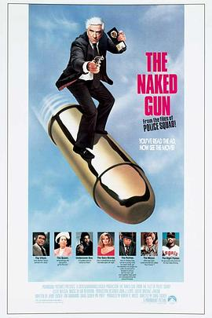

白头神探 / The Naked Gun: From the Files of Police Squad!
又名：笑弹龙虎榜(台) / 白头神探：勇救事头婆(港)
作品信息
| 导演 | 大卫·扎克 |
| 编剧 | 杰瑞·扎克 / 吉姆·艾布拉姆斯 / 大卫·扎克 / 帕特·普罗夫特 |
| 主演 | 莱斯利·尼尔森 / 普瑞希拉·普雷斯利 / 里卡多·蒙特尔班 / 乔治·肯尼迪 / O·J·辛普森 / 苏珊·博宾 / 南希·马钱德 / 雷耶·比克 / 简奈特·查尔斯 / 艾德·威廉姆斯 / 缇尼·罗恩 / 阿尔·杨科维克 / 莱斯利·梅尔 / 维尼弗雷德·弗里德曼 / 乔·格里法西 / 托尼·布拉法 / 罗拉利·哈特 / 尼古拉斯·沃斯 / 罗纳德·G·约瑟夫 / 朵丽丝·海斯 |
| 类型 | 喜剧 / 犯罪 |
| 制片国家/地区 | 美国 |
| 语言 | 英语 |
| 上映日期 | 1988-12-02(美国) |
| 片长 | 85分钟 |
| IMDb | tt0095705 |
说过什么
2025-07-11 13:37:38
广播 · 想看
2018-04-16 22:04:41
广播 · 想看
最后一次看到是 2026-08-01T11:07:58+10:00 · 豆瓣原页